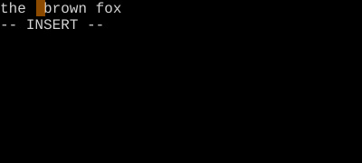
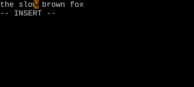
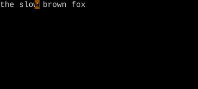

Change
c is delete-then-insert, atomically.
c is the change operator. cw changes a word; cc changes a line; C changes to end of line. S and s are short forms that change a whole line and a single character respectively.
c is what d-then-i would be if you didn't have to think. It deletes the same range d would, and drops you straight into insert mode at that spot. Then Esc closes the change as one undoable, dot-repeatable unit.
| Key | Note |
|---|---|
| c | |
| w |
| Key | Note |
|---|---|
| C |
| Key | Note |
|---|---|
| c | |
| c |
| Key | Note |
|---|---|
| S |
| Key | Note |
|---|---|
| s |
Reference
| Key | Action | Equivalent |
|---|---|---|
| c{motion} | Change range | d{motion} + i |
| cc | Change line | — |
| C | Change to end of line | c$ |
| S | Change line | cc |
| s | Substitute one char | cl |
| cw | Change word (note: like ce) | — |
| ciw | Change inner word | — |
| ca' | Change around quotes | — |
Worked example — cw is c then w
Change = delete + Insert in one step.


Note the trailing space stays — cw stops just before the next word. (One of cw's well-known quirks.)


See also: Delete, More Ways into Insert, Repeat Last Change, The Universal Grammar